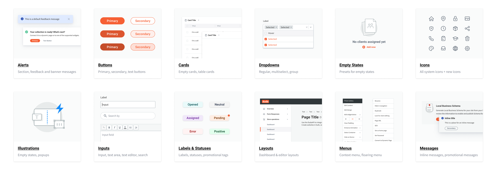
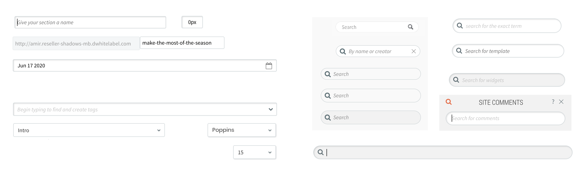
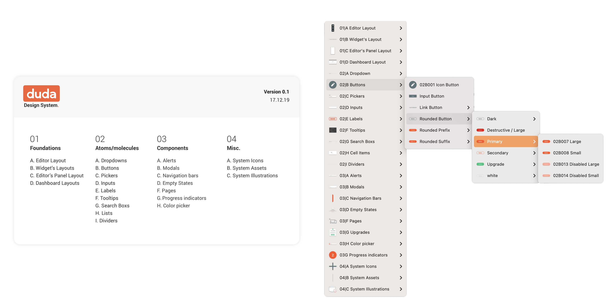
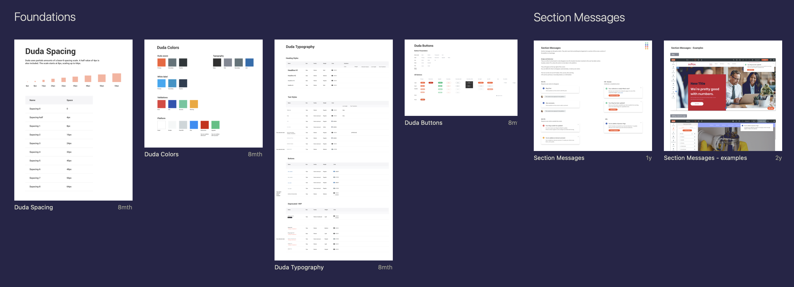
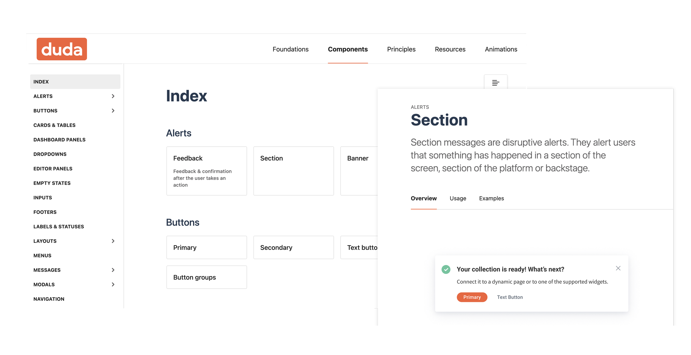
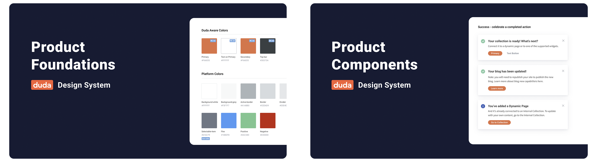
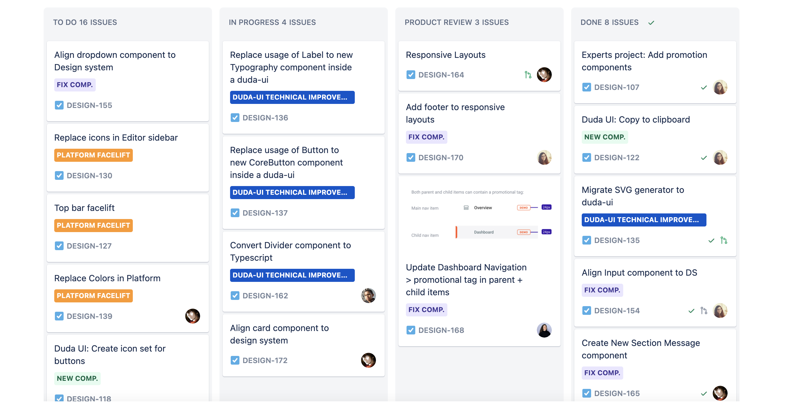
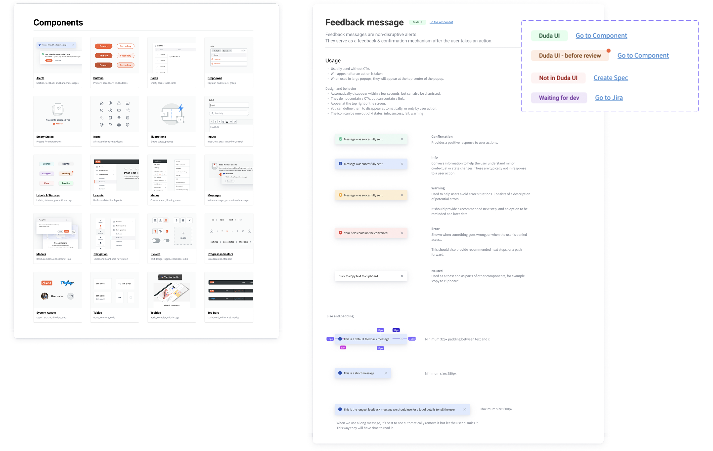
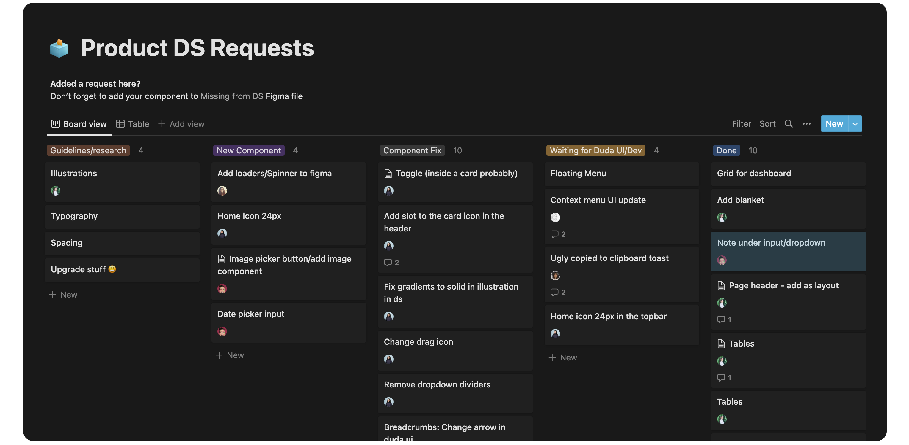

-
About
Building a Design System in Sketch & Figma
-
Our story begins in 2018. I joined Duda's product team and worked alongside 2 other designers.
After a year of working at Duda, a new designer joined the company and was asked to improve old parts of the platform. These were ancient and dark parts that no one touched for years. Not having any guidelines, she invented her own language and re-created the same solutions that already existed in other parts of the platform.
After some frustration from all sides, we decided to create a design system.

-
The Problem
-
- Inconsistencies across the Platform
- Some parts of the platform looked completely different
- Designers had to ask each other for their assets
- New designers had no way of knowing if something exists in the platform
- Designers (and developers) were re-creating components that already exist in the Platform
Our newest designer and I decided the only solution is to have one source of truth for all the designers - A Design System.
-
Research
-
We wanted to learn as much as possible about Design Systems. We started from the most popular ones - Material Design, Spectrum by Adobe, Atlassian, Primer by GitHub, Carbon by IBM and more. We investigated structures and tried to understand how to apply this structure to us. What are some common names for components? Should we have one Design System for all products? What goes into the Design System and what stays out?
-
Inventory
-
With all these questions in mind, we needed to understand what we're up against. What components do we currently have?
We made a list of components to focus on and in 3 days we went over the platform and took screenshots of every component as it appears in every variation.
-
Compare
-
After having most components in one place, we started comparing them. How many variations of input fields do we have?
We found different heights, different fonts, some with inner shadows (🥴) and some without, different type of hints under the inputs with different spacing, some with buttons on the side and some with buttons connected to them. A real mess.

Examples of inconsistencies we found with search, input and
dropdowns across the platform 🥲
-
Define
-
Since we had a lot of variations in the platform and a lot were legacy components, we needed to define the relevant variations for each component and re-create it in Sketch.
-
Organize
-
When we had the majority of the components ready, we started thinking about the structure, naming conventions and categories. We went for 4 main categories - Foundations, Atoms and molecules, Components and Misc (which contains system assets mostly).

-
Present the Design System
-
This is where things got complicated. Our Sketch license at the time didn't allow for more than one designer to access the same Sketch file, so we tried to come up with a way for the other designers (2 more were added in the meantime) to easily find what they are looking for.
1st try - Zeplin.
We created an artboard in Sketch for each component and uploaded it to a dedicated project in Zeplin. Each component was presented according to its goal, usage and variants. We even created an index to explain where to find each component.
This didn't work.
2nd try - Zeroheight.
We uploaded everything to Zeroheight, created all the structure there and added all the info about each component. Zeroheight was searchable and accessible. A dream come true.
In reality, no other designer entered it. They would look for components in Sketch and if they didn't find it, they either asked us or invented their own variation.

Failed attempt to display our Design System on Zeplin

Components and guidelines on Zeroheight
-
Sketch for Teams
-
Moving to Sketch for Teams helped us, since other designers could open the Design System file and look for it there. We also found out about a new shortcut that would open the library assets from Sketch Workspace and allowed us to browse through the library.
-
Figma: A Love Story
-
For me, moving to Figma was the best decision ever. By now, I was on my own in the Design System domain as my partner in crime was going on maternity leave. Also, I was about to move from my position as PM/Designer to a full time Design Operations role.
I learned Figma, re-created every component in Figma and then sorted them into pages for every component or category. Later on I divided them into two files - Foundations and Components. Foundations contain styles while Components contain.. well, components.

-
Zeroheight Comeback
-
I gave Zeroheight one last chance, and updated the Figma components on Zeroheight. That attempt failed once again, when no one was still using it and going into the design system file instead.
-
Figma Cards and Index
-
After I conducted a survey among the designers (by now we were 11), it seems they used the Figma design system file as their source of info. So I decided to gather all the info and add it to Figma, so it will become our source of truth.
Each component got a card, with the component name, goal, usage and states.
I added an index page to the Design System file which included a card for each component or category, with a link and visual of sample components.
-
Aligning React Library
-
My next goal was to align our react library to the design system - make sure any existing component in the library looks and behaves as it should, and create components that do not exist.
I started creating a spec of definitions for each component, and opening a Jira task for each component. I created a template for this spec so other designers could create their own specs.

-
Component Status
-
To track our progress and keep everyone up to date with the latest component state, I created statuses to add to each component:
- Ready - components that have been reviewed and are aligned with the design system.
- Before review - components that have been developed but have not been reviewed.
- Waiting for dev - a spec has been created and is waiting for development.
- No component - this component does not exist in our react library.
When a component is ready or if it exists, I'd link the component from the design system to the component from the react library.

-
Naming
-
To align designers and developers, I went over all components and styles with a client developer and we decided on naming that will be the same for both the design system library and the react component library. This way, even if something is not connected (as text and color styles cannot be connected), it will still be easy to follow the design when developing it.
-
Updates and Sync
-
To keep both designers and developers up to date, I updated the designers on any change in a dedicated slack channel. Each weekly meeting I would go over all the latest updates.
To update developers, I would send updates in their client channel, but these would be missed by a lot of the developers due to many messages in that channel.
In addition, I asked the designers to forward my update to their developers every two weeks, in the beginning of the sprint planning. Only time will tell if that worked.
-
New Requests
-
Design System is a living product, and since our product keeps growing - I created a request board in notion for the design team (and myself) to add tasks to, inform me of components that need fixing or missing guidelines. I connected this board to a dedicated slack channel to notify me on any new request.

-
Goal: Consistency
-
The main goal of all this work was to have consistency across the platform - which means we have to align the platform to the new design system. To replace the new components across the platform, I started creating Jira tasks based on specific product areas. When squads have some spare time or work on a specific screen, they could replace the components there to the new ones. This is a process that will take a long while to finish.